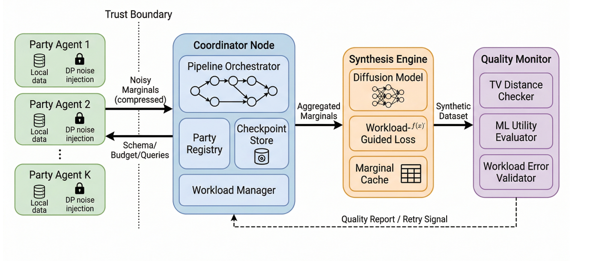

Orchestrating Federated Tabular Synthesis at Scale with Fault-Tolerant Pipeline Execution
Neurocomputing
Each party agent sends compressed, noise-perturbed marginals across a trust boundary. A coordinator holds the party registry, checkpoints, and workload, and passes the aggregated marginals to a synthesis engine: a diffusion model, a workload-guided loss, and a marginal cache. A quality monitor scores total variation, downstream utility, and workload error, and can request a retry. Checkpoints let a failed stage resume without restarting the run.
